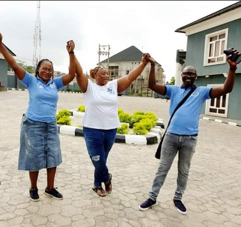
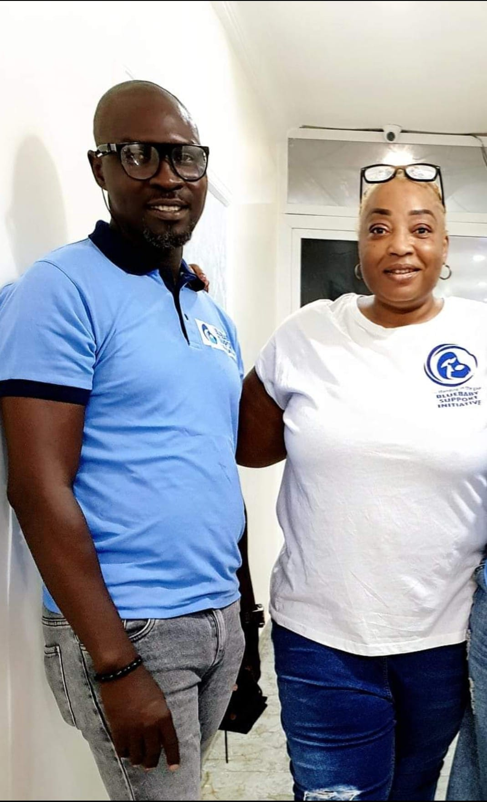
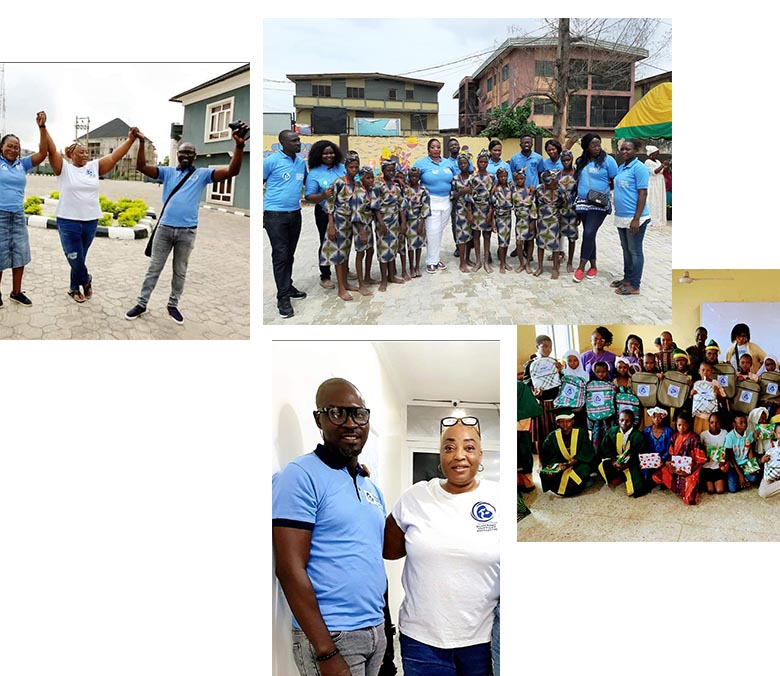
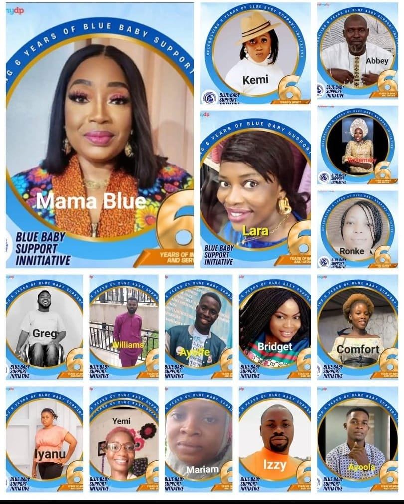

Welcome to Blue Baby Support Initiative
A dedicated nonprofit organization passionate about making a tangible difference in the lives of underprivileged individuals, especially women and children, across Nigeria.
We are a dedicated nonprofit organization passionate about making a tangible difference in the lives of underprivileged individuals, especially women and children, across Nigeria. Rooted in compassion, fueled by a desire for social impact, and driven by strategic action, Blue Baby Support Initiative (BBSI) stands as a beacon of hope for the most vulnerable in our society.
Our Story
Founded in June 2018, on the belief that every life matters, BBSI was established to address critical challenges faced by women and children in Nigeria. We identified gaps in maternal healthcare, educational support for vulnerable children, and economic empowerment for rural women, and we stepped in to bridge those gaps.
From providing emergency relief for single mothers to advocating for maternal and infant health, our journey has been one of resilience, collaboration, and relentless pursuit of positive change.

We envision a society where maternal and child health risks are eliminated, every child has access to quality education, and rural women are economically empowered to live dignified and independent lives.
Our Mission
Advocacy
Championing maternal and infant health through education, resources, and community awareness.
Emergency Support
Providing contingency funds and relief to single mothers and families in crisis.
Maternal Care
Offering care and resources to pregnant women throughout their gestation period.
Child Education
Ensuring disadvantaged children receive the educational tools and support they need to succeed.
Women Empowerment
Equipping rural women with skills and opportunities to overcome poverty and become self-reliant.
Blue Baby Support Initiative (BBSI) is a non-profit organization dedicated to advocating for the welfare and inclusion of vulnerable children in Nigeria, focusing on children's health, education, and the welfare of women. Founded to serve as a bridge for the less privileged, BBSI is committed to creating brighter futures for children and supporting women in need.
Our Motivation
BBSI was inspired by the personal experience of its Founder, Aisha Ogieriakhi, whose child was diagnosed with Asphyxia, commonly known as Blue Baby Syndrome, during childbirth. This led to a difficult journey that included time in the ICU, where many other children did not survive this illness. This traumatic experience, coupled with her struggle with postpartum disorder, drove Aisha to create BBSI in June 2018 to ensure that no family faces these hardships alone. BBSI works tirelessly toward Sustainable Development Goals (SDGs) 2, 3, 4, and 5, aiming to end hunger, ensure health and well-being, sustainable development and achieve gender equality.
Our Purpose
Millions of Nigerian children still lack access to basic needs, facing avoidable health crises, educational neglect, and social vulnerabilities. We believe no child should face an uncertain future because of circumstances beyond their control. Through BBSI, we commit to giving children the healthiest possible start in life, standing as a beacon of hope for those facing severe disadvantages.
BBSI has made significant strides through various initiatives since its inception, driven by a comprehensive approach encompassing child education, healthcare, skill acquisition, and youth livelihood. Our impact is seen across multiple Nigerian communities where we've partnered with public schools, rural hospitals, and primary healthcare centers, providing medical aid, food, and educational materials.
Through the BBSI Scholarship Scheme, we sponsor school fees, distribute school uniforms and sandals, and provide learning materials to ensure that more children have the opportunity for education.
Additionally, we supply vital equipment for healthcare centers, particularly targeting issues like asphyxia and postpartum disorder. By offering support through food provision and medical aid, BBSI is helping to shape a safer, healthier, and more equitable future for vulnerable children.

Our Impact
Our initiatives have laid the groundwork for children to gain critical skills, confidence, and resilience. We believe that empowered children grow into responsible, socially conscious adults. Our programs work to foster responsibility, character, and a drive to create positive change.
Celebrating 6 Years of Blue Baby Support
BBSI's team consists of innovative, passionate youth and dedicated medical professionals equipped to champion our mission and address the pressing needs of those we serve. Our dedicated team brings together expertise in project management, community outreach, fundraising, advocacy, and research, united by a shared passion to build a better future for all.

What We're Building on the Ground
Project Back-to-School
This project provides school uniforms, shoes, writing materials, and other essentials to public school children. We also sponsor students through our BBSI Scholarship Scheme and have provided shelter to homeless families.
Outreach Programs
We hold medical outreaches, organize festive events, and regularly feed and empower vulnerable families across Nigeria, including communities in Benue, Ebutte Metta, Ikorodu, Abeokuta, and Ibadan.
Medical Interventions
We support rural women with pregnancy education, distribute essential equipment to rural centers, and offer intensive maternal health education. Our outreach also addresses teenage pregnancy, child marriage, and critical maternal health needs.
BBSI is dedicated to creating sustainable change through:
Advocacy & Partnership
Working with local initiatives to promote maternal and child health and combat harmful cultural practices.
Empowerment Programs
Developing income-generating skills for rural women, aiding in poverty reduction, and supporting decent employment.
Long-Term Projects
Establishing an orphanage, building an inclusive school for children with disabilities, and creating a cooperative (Prego-Preneur) to support mothers from pregnancy to three years postpartum.
BBSI is committed to bridging societal gaps and reducing inequalities, ensuring that the most vulnerable are supported, empowered, and equipped to succeed. Through these initiatives, we strive to build a foundation for a healthier and more inclusive society.